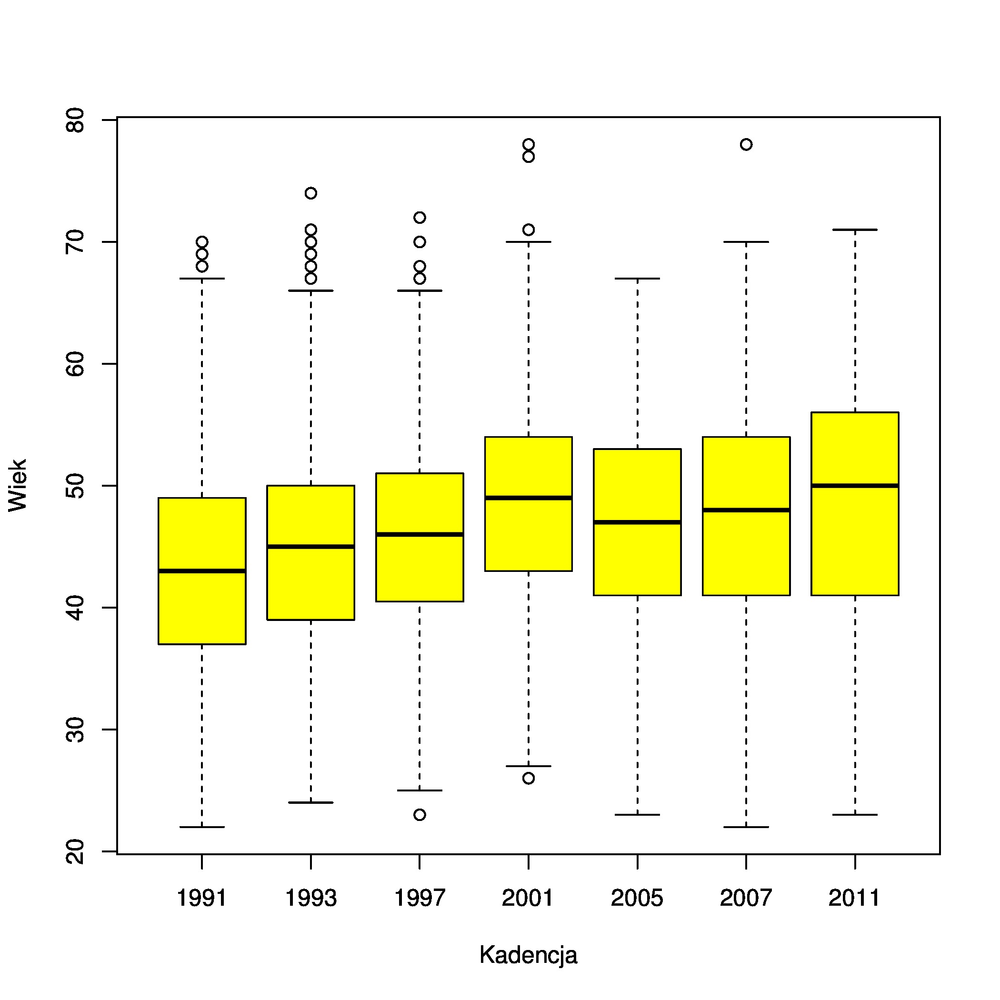

Kadencja min q1 Me q3 max Śr
1991 22.0 37.0 43.0 49.0 70.0 43,2
1993 24.0 39.0 45.0 50.0 74.0 45,2
1997 23.0 40.5 46.0 51.0 72.0 46,4
2001 26.0 43.0 49.0 54.0 78.0 48,3
2005 23.0 41.0 47.0 53.0 67.0 46,5
2007 22.0 41.0 48.0 54.0 78.0 47,2
2011 23.0 41.0 50.0 56.0 71.0 48,7
Wiek (w latach w chwili ukonstytuowania się Sejmu), odpowiednio:
min -- wartość minimalna/maksymalna, q1/q3 -- kwartyle, Me -- mediana, Śr -- średnia.
Dane: https://github.com/hrpunio/Data/tree/master/sejm.
Wartości przeciętne rosną do kadencji #4. Kadencja #5 to duże zmiany (upadek SLD, dominacja PO/PiS), co m.in. skutkuje spadkiem średniego wieku (nowi, młodzi posłowie?). W kolejnych kadencjach można obserwować ponowny wzrost średniej (por. wykres).
